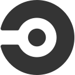
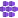
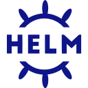
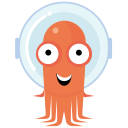
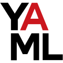
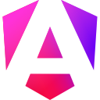

Isolated staging2 delivery
Delivered the September 2026 backend and portal phases through image, secret, data, routing, and browser-smoke gates.
6Backend services
2Portals smoke-tested
18CSI keys verified
Senior Cloud DevOps / Platform Engineer
I make inherited Azure platforms safer to change through controlled migrations, repeatable delivery, and workload-to-data troubleshooting across AKS, Terraform, GitHub Actions, APIM, and Key Vault.
2026 implementation checkpoints, with the scope and validation behind each result.
Impact summary (PDF)Delivered the September 2026 backend and portal phases through image, secret, data, routing, and browser-smoke gates.
Used bounded SDK streaming, read-only source access, and no-delete target permissions; matched exact blob names and sizes.
Separated RU/serverless and DocumentDB vCore migration stages, resolved database egress blocking, and standardized delivery workflows.
Rebuilt platform guides from parsed Terraform, rendered overlays, and workflow definitions, gated by automated Markdown, diagram, and link validation.
Dated delivery outcomes, not a live inventory or an uptime guarantee. Each result has a validation checkpoint and a clear scope.
Delivered six backend workloads and two portals while retaining legacy staging as the boundary. Temporary access and copy resources were removed; authenticated portal UAT and notifications remained follow-ups.
Engineering decisions, validation, and recovery boundaries behind the delivery outcomes.
Verified the staging2 18-key Key Vault-to-CSI contract and exact Kubernetes Secret coverage, then revoked temporary vault-scoped operator access and removed disposable validation resources.
Pinned six backend images by digest, checked probes and direct service paths before exposing routes, then validated API backends and portal builds one step at a time. Kept environment-specific resource and scaling policies explicit.
Approach: Separate infrastructure, identity, data, workload, route, and portal gates. Preserve legacy staging and move one API at a time.
Validated: The September handoff records six backend Deployments, two smoke-tested portals, exact CSI key coverage, and removal of temporary access and copy resources.
Boundary: Authenticated UAT and notifications remained follow-ups. The historical Gateway API handoff differs from October NGINX source; current controller ownership needs reconciliation before reuse.
Replicated 91,724 application blobs across three containers using bounded SDK streaming after CLI and service-side copy attempts failed. Kept source access read-only and excluded target delete permissions.
Approach: Pilot one blob, then a small container, before using 24 bounded workers for the larger data set. Preserve metadata, content settings, and tier; do not overwrite matching objects.
Validated: Exact name/size parity for 91,724 objects and 12,244,349,406 bytes at the checkpoint. Temporary Jobs, pods, and SAS Secrets were removed.
Boundary: This was a name/size comparison, not a content-checksum audit. The source remained writable, so parity was time-bound and required a delta gate before cutover.
Built monitoring and reporting around Application Insights, Grafana, Prometheus, availability tests, alert rules, and performance assessments.
Moved the production data layer in separate stages from self-hosted MongoDB to Cosmos DB MongoDB API (RU/serverless), then DocumentDB vCore. Traced blocked node traffic to firewall port 10260 and verified real application reads after the secret cutover.
Approach: Treat RU/serverless and vCore as separate targets. Trace workload egress rather than assuming a healthy resource is reachable from a pod.
Validated: Recorded data checks for the RU stage and real application reads after the vCore connection cutover, with source and connection recovery anchors retained for the agreed window.
Boundary: Declared high availability and a regional replica do not establish tested restore, regional failover, RPO, or RTO.
Aligned six repositories across four branches and validated 18 promotion merge paths at the recorded checkpoint. Added a later five-branch source-contract guard before cloud login, and made Swagger publishing repeatable with five imported operations and a scoped public-server rewrite.
Rebuilt 15 platform README guides across 12 repositories in October 2026 by parsing active Terraform, rendering every Kustomize overlay, and reading workflow definitions, then gated the result with automated Markdown, diagram, and link validation.
Approach: Treat documentation claims like code: derive them from parsed configuration, exclude commented legacy blocks, and validate diagrams and links automatically.
Validated: 16 architecture diagrams parsed by the real Mermaid engine; tables, links, and source-consistency assertions passed across all 15 guides.
Boundary: The rebuild surfaced a routing-ownership conflict between infrastructure and manifests before it could cause a failed deployment, documented for reconciliation rather than silently patched.
A clear path from cloud and systems administration through client delivery into production platform engineering.
Deliver cloud platform work for client environments, including Mosadad's six AKS backend services, two App Service portals, and separate Functions and VM payment paths. Reconciled inherited Terraform, delivered isolated staging2 migration phases, replicated 91,724 application blobs, verified an 18-key CSI contract, and improved database connectivity, workflow promotion, and repeatable API publishing.
Administered Windows, Linux, and AWS environments; supported CI/CD platforms; automated maintenance, backups, and deployments with Bash and Python; and sustained 99.9% service uptime.
Delivered a client-facing 3-tier web application on AWS with automated infrastructure, CI/CD, container orchestration, autoscaling, and monitoring across the full DevOps lifecycle.
Delivered two client web applications on AWS: a static website provisioned with CloudFormation and a 3-tier application deployed through an automated CircleCI pipeline with observability controls.
Four reference implementations and two training projects, separate from employer production code.
Five Terraform modules for networking, AKS, ACR, Key Vault, and APIM, with a dev composition and explicit production-hardening boundaries.
Three workloads sharing a base across dev and prod overlays, with environment-specific configuration, CSI references, an API HPA, and local render checks.
One API with dev/prod Helm values, app-of-apps and ApplicationSet examples, automatic dev reconciliation, and deliberate production sync.
Callable .NET build/test, Docker and ACR publishing, Trivy image gating, AKS rollout checks, and optional APIM import, with a consuming-workflow example.
Collaborative Angular and .NET delivery with Jenkins, Docker, Kubernetes, Terraform, Ansible, and AWS EKS.

MCIT & Udacity trainingHistorical CircleCI training project covering build/test, dependency audits, CloudFormation, Ansible, smoke checks, promotion, and failure-time rollback hooks.
Infrastructure ownership, application delivery, and runtime validation are separate responsibilities with explicit change and recovery gates.
The stack is grouped by how it supports secure, repeatable production delivery.

AKSDocker
HelmKustomize
Argo CDIngress
YAML
AngularCloud credentials lead. Professional development supports senior communication and decision-making.
Resilient cloud architecture, workload design, and AWS service selection.
Valid to Sep 2028Microsoft Entra identity, authentication, access, and identity governance.
Issued Nov 2025AWS cloud concepts, security, billing, and service foundations.
Valid to Sep 2028Udacity and MCIT program covering cloud infrastructure, CI/CD, and DevOps delivery.
Completed 2023Problem solving, communication, adaptability, and digital collaboration.
Completed 2025KodeKloud training in Kubernetes administration and CKA exam objectives.
Course completeManara training aligned to Azure administration and AZ-104 objectives.
Training completeRemote, UAE, KSA, or Egypt-based. Strongest fit: Azure platform engineering, Kubernetes delivery, CI/CD modernization, and production operations.